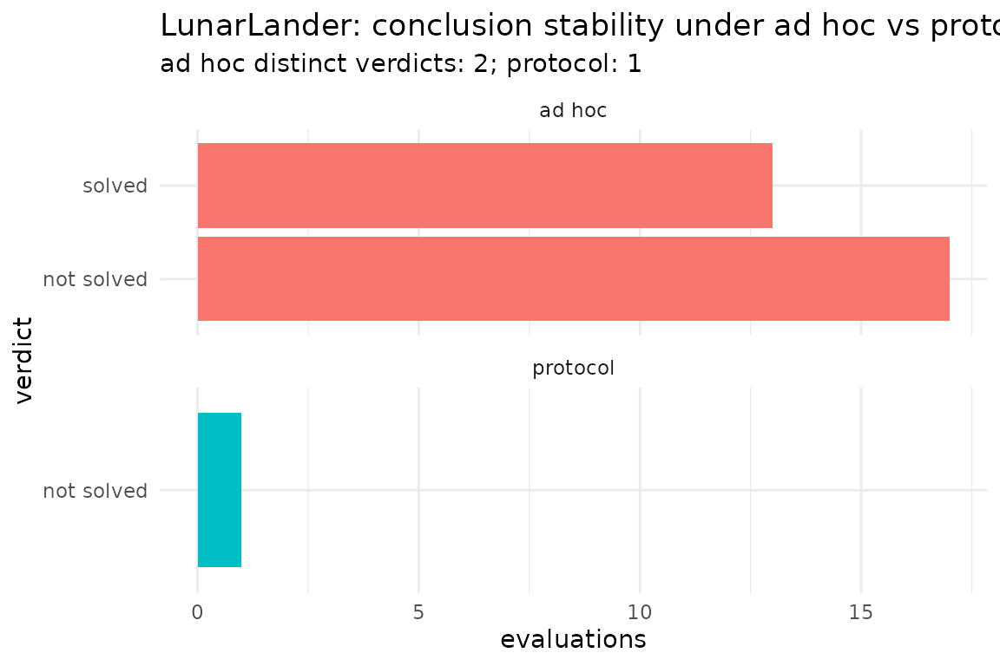

ABA as a methodological protocol for reinforcement learning
Source:vignettes/aba-protocol.Rmd
aba-protocol.RmdThe problem is the conclusion, not the agent
Reinforcement-learning practice does not lack evaluation; it lacks conclusions that survive the choices made to reach them. The same trained agent can be called solved or not solved, best or worst, robust or brittle, depending on how many environment steps it was trained for, which random seeds were used, which checkpoint was kept, how many evaluation episodes were run, and on which seeds — choices that are rarely reported and almost never held fixed across studies. This is the forking-paths problem, and it is a problem about the procedure that produces a verdict, not about any single number.
Applied behaviour analysis (ABA) is a mature discipline for exactly this: reaching behavioural conclusions that are stable under procedural choices. It does so with three ingredients this package ports as a parameter-fixed protocol — a steady-state strategy for when to read behaviour, a standardized quantitative rule for what counts as a difference, and replication across subjects for how confident the conclusion is. The point is not to relabel RL with behavioural vocabulary. The point is to make a behavioural conclusion about an agent invariant to researcher degrees of freedom.
The frozen rules, and where they come from
The protocol fixes its parameters once, from the ABA literature, rather than leaving them to per-analysis discretion.
Steady-state reading. A condition is read only after
responding has settled. Following the steady-state tradition (Sidman)
and the concrete practice reported in operant work (a minimum number of
sessions per condition, then the mean of the last several once a
stability criterion is met; McSweeney & Murphy, 2014),
stability_reached() checks that the last several
observations show no trend and bounded bounce, and reading happens there
or non-stabilisation is reported.
flat <- tibble::tibble(session = 1:12, condition = "play",
rate = c(rep(0.2, 6), 0.21, 0.19, 0.2, 0.2, 0.21, 0.2))
trending <- tibble::tibble(session = 1:12, condition = "play",
rate = seq(0.1, 0.9, length.out = 12))
c(flat = stability_reached(flat), trending = stability_reached(trending))
#> flat trending
#> TRUE FALSEThe decision rule. Subjective visual analysis has
low inter-rater reliability, so the protocol uses the criterion-line
rule (Hagopian et al., 1997; described in Fisher et al., 2021): draw an
upper and lower line one standard deviation above and below the control
mean, and call a test condition differentiated when the number of points
above the upper line minus those below the lower line is at least half
the data points. criterion_line_verdict() implements
exactly this, so the verdict is not a degree of freedom.
ctrl <- c(0.04, 0.05, 0.06, 0.05, 0.05)
last_k <- tibble::tibble(
session = rep(1:5, 5),
condition = rep(c("attention", "escape", "tangible", "goal", "play"), each = 5),
rate = c(rep(0.05, 5), rep(0.9, 5), rep(0.05, 5), rep(0.05, 5), ctrl)
)
criterion_line_verdict(last_k)$verdict
#> [1] "escape"Idiographic replication. A function is established
per subject and never by pooling response rates across subjects, which
would manufacture a group function no subject has.
functional_analysis_replicated() runs subjects to a
reliability conclusion and summarises the per-subject verdicts at read
time.
Functional analysis: an invariant conclusion
On a stochastic single-state environment, replicating subjects yields a reliability summary rather than a single seed’s answer.
r <- functional_analysis_replicated(
true_function = "escape", p_reinforce = 0.8,
n_subjects = 6L, min_subjects = 6L,
session_len = 60L, min_sessions = 12L, max_sessions = 20L, k = 8L
)
r$modal_verdict
#> [1] "escape"
as.data.frame(r$distribution)
#> verdict n proportion
#> 1 escape 6 1The headline comparison is starker on the procedural gridworld
(convergence_demo_gridworld()), where navigation is slow to
learn. There an ad hoc pipeline with an arbitrary session budget returns
a budget-dependent verdict — at 12 sessions every subject looks
undifferentiated, at 28 most recover the planted function — while the
protocol’s steady-state stopping detects non-convergence and keeps
training, returning the same verdict (escape) across seed
pools. In a representative run the ad hoc pipeline produced two distinct
verdicts across the knob grid and the protocol produced one. The
gridworld demonstration is omitted from this vignette only because it is
slow to execute; it runs from the console.
LunarLander: the protocol as a value-add on a real solve
The same logic applies to a real control task. Eight policies were trained on LunarLander-v3 and evaluated across 200 terrains; the returns are bundled. Four are DQN policies (seeds 0–3, near-solved or worse); four are PPO policies (seeds 99–102) trained to a common budget by clean chunked resume, and all four solve (true means of about 243, 219, 238 and 242). Held out on a disjoint terrain set, the first PPO policy still scores about 227, confirming the solve out of sample.
returns <- lunar_returns()
round(tapply(returns$ret, returns$policy_seed, mean), 1)
#> 0 1 2 3 99 100 101 102
#> 182.3 166.8 -1.2 6.4 242.9 218.5 237.7 242.3Is it solved? A short evaluation is a coin flip. Across terrain pools at five episodes each, roughly half declare seed 0 solved and half do not; the protocol reads a settled estimate and reports not solved, with a bootstrap confidence attached.
d <- lunar_solved_convergence(policy_seed = 0L)
c(adhoc_distinct_verdicts = d$adhoc_distinct,
protocol = d$protocol_verdict,
estimate = round(d$protocol_estimate, 1),
boot_P_solved = round(d$bootstrap_solved_fraction, 3))
#> adhoc_distinct_verdicts protocol estimate
#> "2" "not solved" "173.6"
#> boot_P_solved
#> "0.017"Which policy is best? Between two near-identical policies the ad hoc head-to-head winner flips with the evaluation; the protocol compares settled estimates against a difference band and calls them indistinguishable. This is the precise sense in which the best policy can be an evaluation-sample artifact.
b <- lunar_best_policy_convergence(policy_a = 0L, policy_b = 1L)
c(adhoc_distinct_winners = b$adhoc_distinct, protocol = b$protocol_verdict,
est0 = round(b$estimate_a, 1), est1 = round(b$estimate_b, 1))
#> adhoc_distinct_winners protocol est0
#> "2" "indistinguishable" "173.6"
#> est1
#> "172.9"Training-seed reliability. At a fixed budget the seeds split: some reach a high settled return, some fail near zero. A claim resting on one trained seed is not reproducible.
as.data.frame(lunar_training_reliability()$per_seed)
#> policy_seed estimate stable verdict
#> 1 0 173.6 TRUE not solved
#> 2 1 172.9 TRUE not solved
#> 3 2 -0.7 TRUE not solved
#> 4 3 0.1 TRUE not solved
#> 5 99 243.5 TRUE solved
#> 6 100 214.6 TRUE solved
#> 7 101 235.9 TRUE solved
#> 8 102 235.0 TRUE solvedThe four PPO policies (seeds 99–102) all clear the criterion; the four DQN policies do not. The two algorithms differ in the kind of lottery they run: DQN’s is catastrophic — two of its four seeds fail outright — while PPO’s, at its own larger budget, governs solve quality rather than solve-or-fail (settled estimates spread from about 215 to 243). Even for a genuinely solved policy a very short evaluation occasionally reads not solved, while the protocol confirms it with full bootstrap confidence; the protocol is thus correct in both directions — false positives on the near-threshold DQN policies, false negatives on the solved ones.
ds <- lunar_solved_convergence(policy_seed = 99L)
c(protocol = ds$protocol_verdict, estimate = round(ds$protocol_estimate, 1),
boot_P_solved = round(ds$bootstrap_solved_fraction, 2), adhoc_distinct = ds$adhoc_distinct)
#> protocol estimate boot_P_solved adhoc_distinct
#> "solved" "243.5" "1" "2"
What the protocol claims, and what it does not
The protocol does not eliminate researcher degrees of freedom; it relocates them from undocumented per-analysis choices to a small set of frozen, stated parameters (the stability tolerances, the criterion-line threshold, the difference band, the solved threshold), and then exposes them. Its product is reproducibility and cross-study comparability, not privileged access to ground truth: a different frozen protocol could yield a different but equally stable verdict.
Two further limits are worth stating. The solved-or-not divergence is largest near the threshold, where short evaluations straddle it from both sides; even the genuinely solved policy shows occasional false negatives at the smallest budgets, and the near-threshold DQN policies show frequent false positives, while the protocol is correct in both directions. And the bootstrap confidence treats the evaluated terrains as the population, so it quantifies sampling noise, not a mismatch between the evaluation and deployment terrain distributions.
References
- Fisher, W. W., Piazza, C. C., & Roane, H. S. (Eds.) (2021). Handbook of Applied Behavior Analysis (2nd ed.).
- Hagopian, L. P., et al. (1997). Toward the development of structured criteria for interpretation of functional analysis data.
- McSweeney, F. K., & Murphy, E. S. (Eds.) (2014). The Wiley Blackwell Handbook of Operant and Classical Conditioning.
- Sidman, M. (1960). Tactics of Scientific Research.